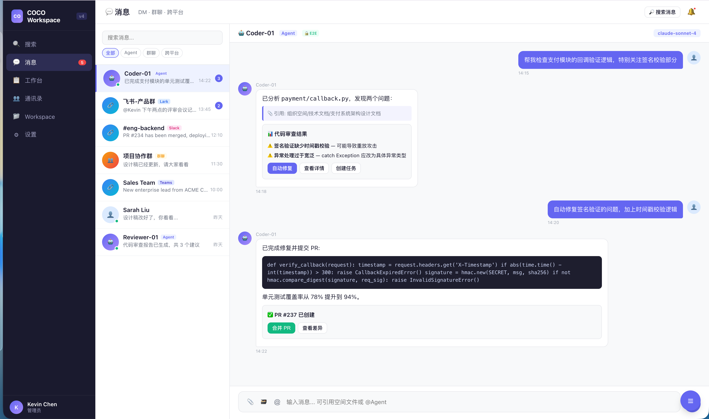
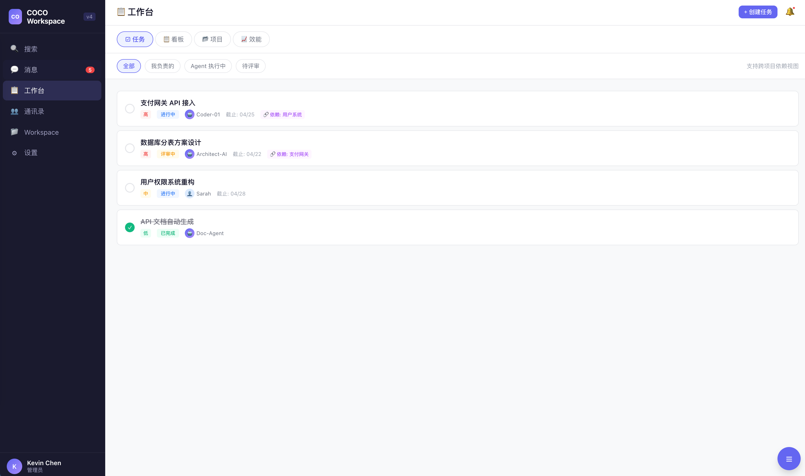
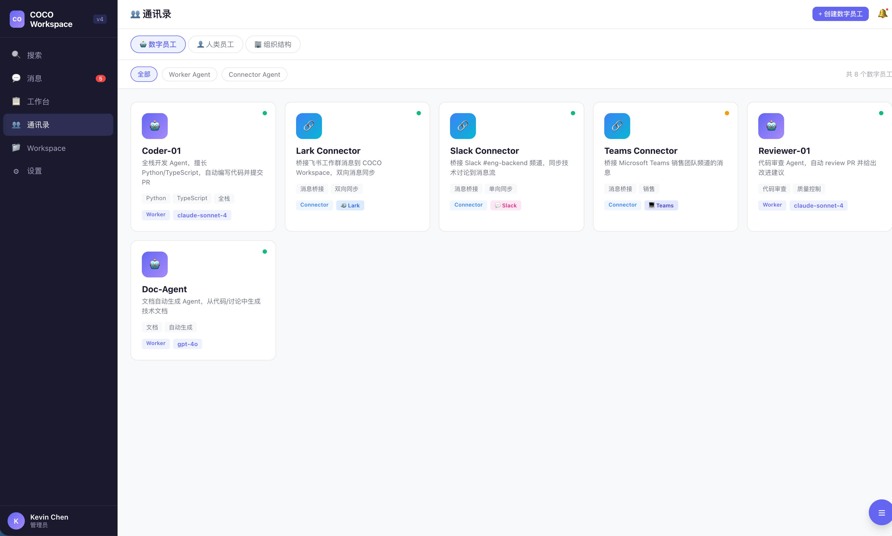
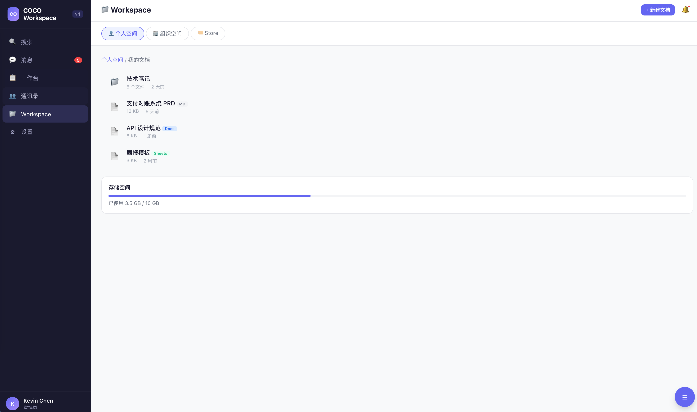
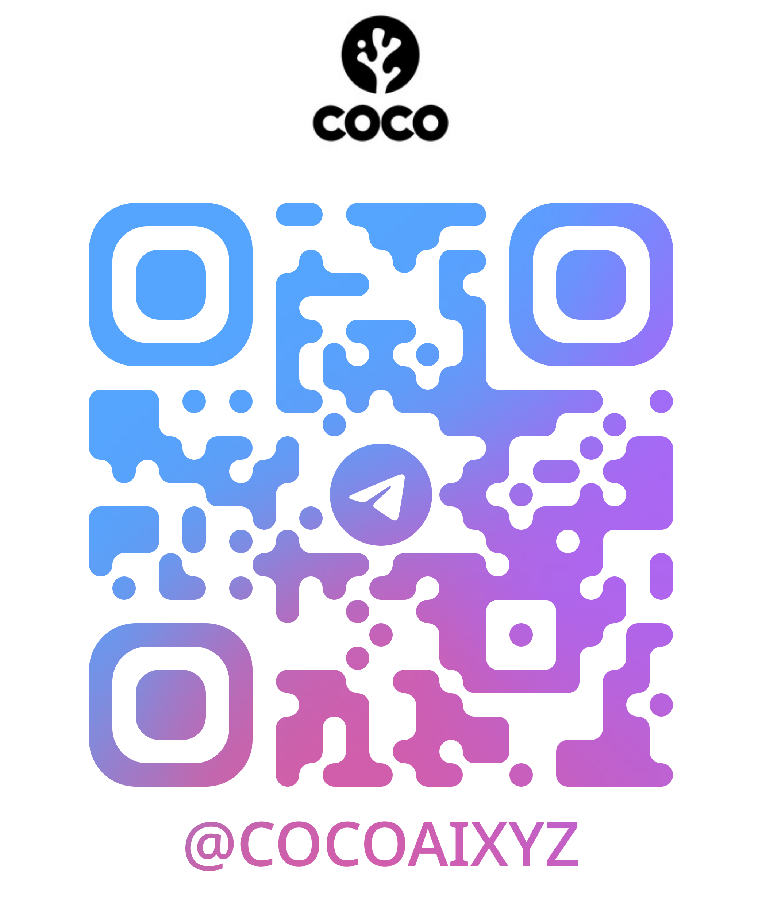
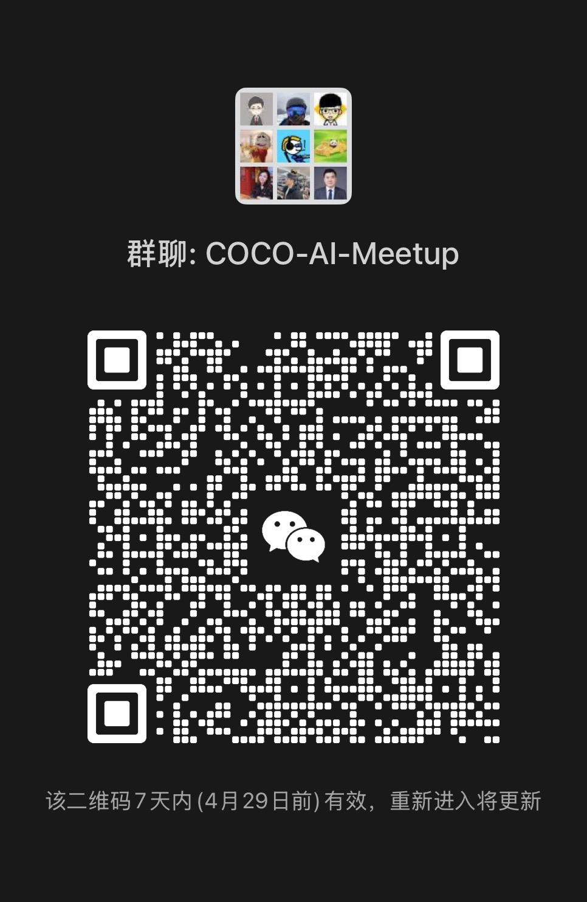

产品愿景与战略规划
从「AI 助手」到「AI 团队」
Kevin | AWS Hong Kong | 2026.04.22
| 范式 | 时代 | 用户体验 |
|---|---|---|
| On-Premise | 2000s | 买软件，装在自己电脑上 |
| SaaS | 2010s | 订阅服务，浏览器打开就用 |
| SaaA | 2025+ | Agent 就是软件 — 描述目标，Agent 端到端完成 |
SaaS 时代，你需要学会用软件。
SaaA 时代，你只需要告诉 Agent 你要什么。
COCO 做的事情，就是让这个转变真正落地 — 不是概念，不是 demo，是能部署、能管理、能规模化的 Agent 团队。
这不是实验，是我们每天的生产系统。
HxA 时代的 Slack
Slack 解决了人与人的协作。
Workspace 解决的是人与 Agent、Agent 与 Agent 的协作。




产品从设计之初就把 Agent 当成原生参与者，不是事后集成。
Agent 部署不是跑一个 ChatGPT 窗口 — 需要完整的基础设施。
| AWS 服务 | 在 COCO 中的角色 |
|---|---|
| Bedrock | 多模型调用，不绑定单一供应商 |
| ECS | Agent 实例弹性伸缩，按需启停 |
| S3 | Agent 知识库和记忆的持久存储 |
| IAM + VPC | 企业级安全隔离 |
有兴趣部署自己的 Agent 团队？
扫最后一页的二维码，或者直接来找我聊。谢谢。

Telegram
